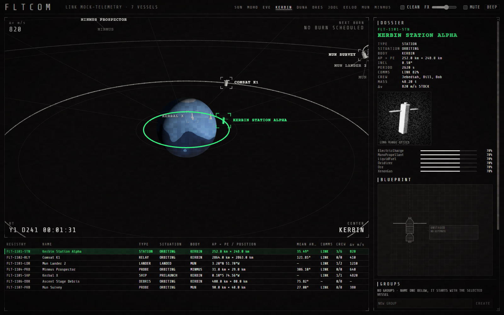
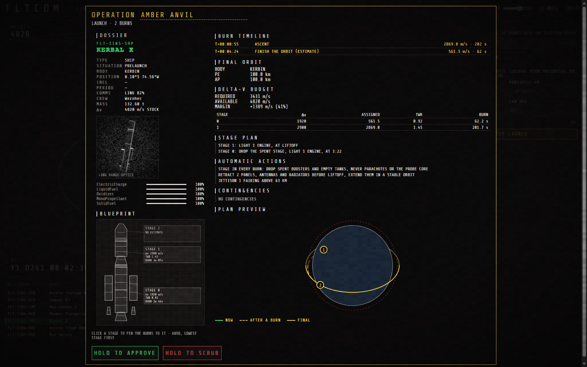
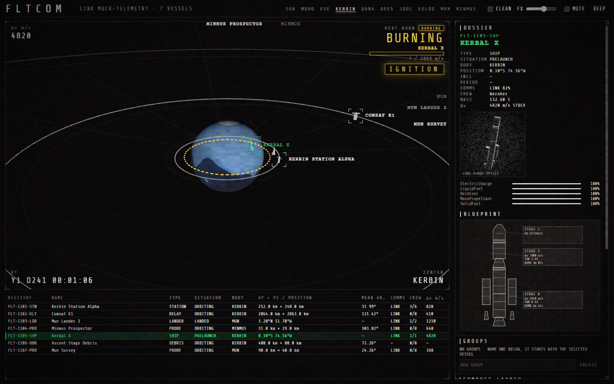
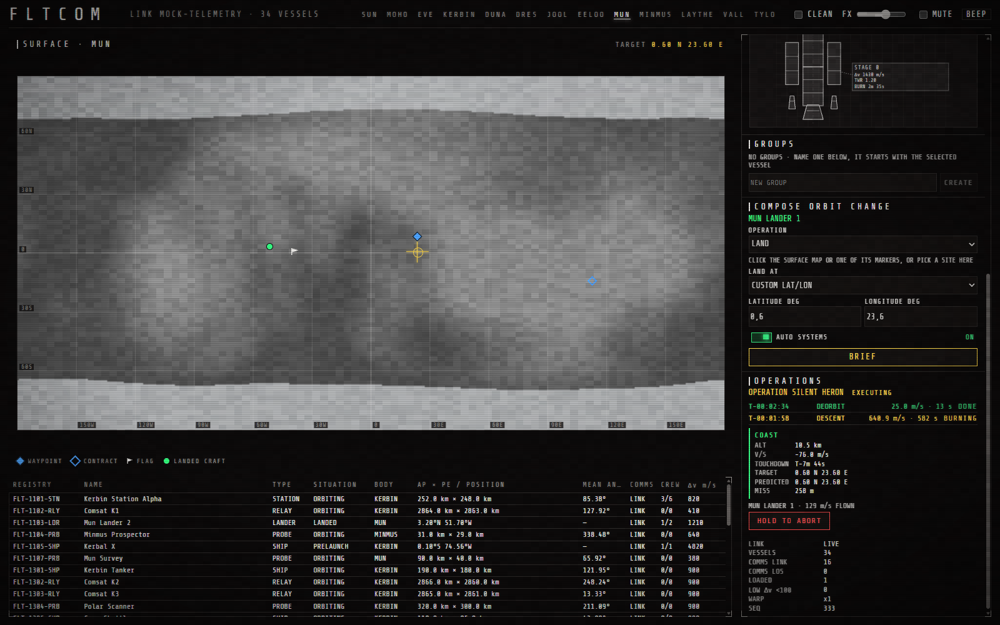
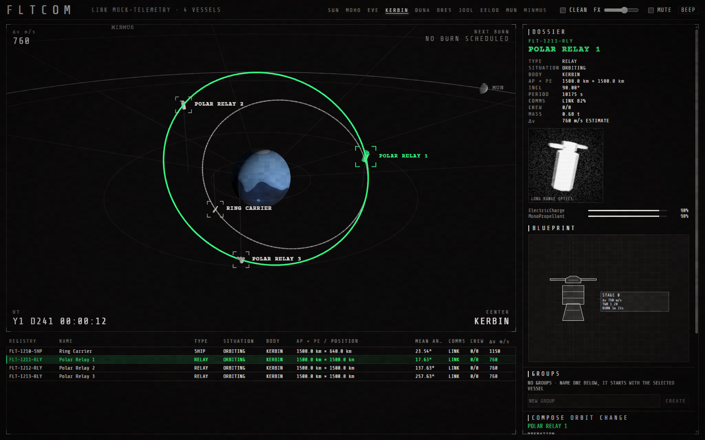
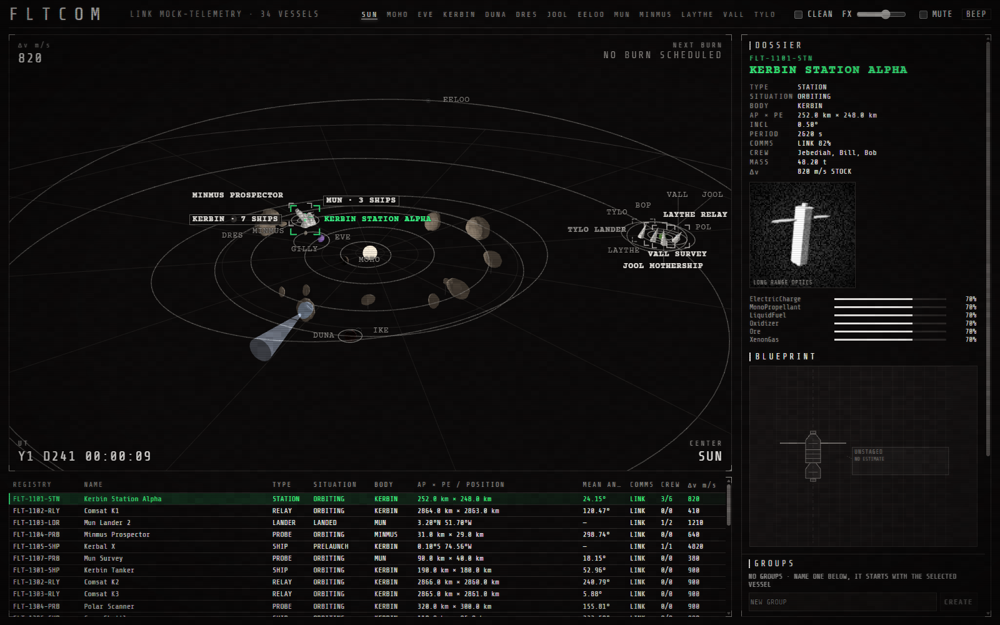

See every ship
Follow the vessels in your loaded save, including the ones you aren’t flying. Select a ship on the tactical map or fleet list to inspect its orbit, resources, communications and stages.
Fleet control / Kerbal Space Program 1.12.5
Track every ship in your save and let FLTCOM fly your orbit changes.
A cinematic mission-briefing display, in your browser. Compose an operation, review the plan, give the go-ahead.
Public preview · Manual install · Coming to CKAN

Game KSP 1.12.5
Display Localhost browser
Control Approve, then fly
Licence GPL-3.0
01 / What it does
Follow the vessels in your loaded save, including the ones you aren’t flying. Select a ship on the tactical map or fleet list to inspect its orbit, resources, communications and stages.
Every plan becomes OPERATION <codename>: a burn timeline, a per-stage delta-v budget and contingencies. Review the numbers before you approve. Red contingencies block approval.
Approve the operation, answer the warp prompt when it appears, and watch the ship fly. Named groups get individual burn plans; group members outside physics range can burn in the background.
For ships already in orbit. A ship on the launch pad gets a launch to orbit; ships in orbit can also transfer, rendezvous, dock, land or deploy a constellation.
02 / How it looks
A cinematic mission-briefing display for a second monitor. These captures show the current interface with test saves and demo telemetry. Select an image to inspect it at full size.

Every operation gets a codename, a burn timeline, a stage budget, its automatic actions and a plan preview. Demo telemetry.

The countdown turns into ignition, and a delta-v bar fills as the burn goes. Demo telemetry.

A live descent readout, with the landing marker on the surface map. Demo telemetry.

A carrier releases its satellites into an evenly spaced ring, equatorial or tilted. Demo telemetry.

Centre the map on the Sun to see the whole fleet, with labels kept apart. Demo telemetry.
03 / How to use it
GameData/FLTCOM folder into your KSP installation’s GameData folder. The plugin should be at GameData/FLTCOM/FLTCOM.dll.Coming to CKAN. Until it is listed, use the manual install above. If no packaged release is available yet, check back for the next release.
Open the display
http://127.0.0.1:47800/Use a browser on the same computer as KSP, or click the in-game FLTCOM toolbar button. Move the browser to a second monitor if you have one.
Pick an orbiting vessel from the map or fleet list. It needs fuel and maneuver-direction SAS; an uncrewed ship needs a home signal when CommNet is enabled.
Choose CIRCULARIZE for a first try, or another operation. Enter an altitude in kilometres or inclination in degrees when asked, then select BRIEF.
Read the burn timeline, stage budget and contingencies. Clear any red issues before selecting APPROVE, or use SCRUB to discard the plan.
When offered, select WARP to advance toward the burn or NO to wait at normal speed. Confirm a vessel switch if requested.
Follow the countdown and operation status as FLTCOM executes the burns. Use SCRUB to stop the operation; pilot input also releases active flight control.
04 / FAQ
No. FLTCOM’s server listens on localhost only. The browser and KSP must run on the same computer. A second monitor works; a phone or another computer on your network cannot connect. The public website you’re reading is separate from the live display.
Kerbal Space Program 1.12.5. Other versions are not claimed as supported.
Compatibility depends on the mod. FLTCOM refuses to start its display server when it detects Luna Multiplayer, Principia or Real Solar System. It also refuses to take over a loaded vessel while it detects MechJeb or kOS flight control. Universal compatibility with modded parts and propulsion is not guaranteed.
Yes, once Mission Control and the Tracking Station have unlocked maneuver planning. The vessel also needs a pilot or probe core capable of maneuver-direction SAS. An uncrewed craft needs a home signal when CommNet is enabled; the briefing reports blockers.
FLTCOM is in development, so back up your save before using it. Approved operations change real vessel orbits and consume fuel. Briefings block red contingencies, and running operations are placed on hold when a save is loaded, but these safeguards are not a guarantee. You can scrub an operation; pilot input, Abort or Alt + H releases active autonomous control.
The live display is served by the mod on your own computer and uses bundled assets and fonts. There is no account to create. This public site also uses local fonts and has no external trackers.
05 / Roadmap
“Built” means implemented in the current code, not a finished release. Planned work has no announced delivery date.
Tactical map, fleet list, orbit and resource details, communications and stage blueprints.
Briefings, stage budgets, contingencies, approval, warp prompts and burn execution.
Named groups, common changes, orbital spacing and burns for unloaded group members.
From the launch pad to a target orbit, and back down on the pad, the runway or chosen coordinates.
Journeys beyond the ship’s current central body, with a transfer window chart for planets.
Bring ships together, dock to a chosen port, and deploy satellite rings from a carrier.
A 3D map of the whole system and a refreshed display. This preview asks for your feedback on it.
Install and update FLTCOM through CKAN.
06 / Licence & credits
FLTCOM is free software under GNU GPL-3.0. Copyright © 2026 the FLTCOM contributors.
MechJeb is also GPL-3.0. FLTCOM’s licence allows reuse of its maths, with original copyright notices retained in any ported files.
Typography: IBM Plex Mono by IBM and Saira Condensed by the Saira Project Authors. Both are bundled under the SIL Open Font License 1.1. Read the IBM Plex Mono licence and Saira Condensed licence.
An independent mod for Kerbal Space Program. Screenshots show FLTCOM’s own display; this site includes no game textures, logos or artwork.